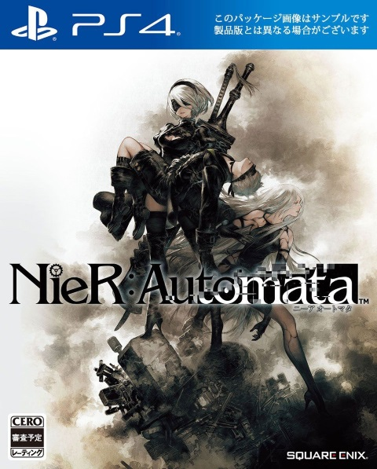

|  |
Nier AutomataNier: Automata é um jogo eletrônico de RPG de ação desenvolvido pela PlatinumGames e publicado pela Square Enix. Foi lançado em fevereiro de 2017 no Japão e mundialmente no mês seguinte para PlayStation 4 e Microsoft Windows, com uma versão para Xbox One estreando em junho de 2018.
R$ 120,80
|